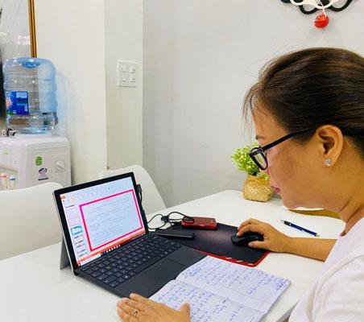

Học sinh thị xã Từ sơn bắt nhịp học trực tuyến
Từ ngày 17-2, các trường tại thị xã Từ Sơn chuyển sang dạy - học trực tuyến. Dựa vào kinh nghiệm dạy - học trực tuyến đầu năm 2020, giáo viên và học sinh đã bắt kịp nhịp học trong đợt này
Hôm 15-2, UBND tỉnh Bắc Ninh đã ra thông báo bắt đầu từ ngày 17-2, học sinh toàn tỉnh nghỉ học đến hết ngày 21/2, tỉnh yêu cầu cán bộ, giáo viên, nhân viên các trường vẫn tiếp tục thực hiện nhiệm vụ theo kế hoạch năm học. Theo đó, nhanh chóng chuyển đổi sang hình thức dạy và học trên internet; bảo đảm thông tin xuyên suốt trước, trong và sau Tết nguyên đán.
Chủ động thực hiện
Thông báo tạm dừng học tập được đưa ra khi chỉ còn một tuần nữa học sinh sẽ bước vào kỳ nghỉ Tết nguyên đán 2021. Dù thời gian học trực tuyến ngắn nhưng nhiều giáo viên đánh giá rằng học sinh đã tiếp nhận hình thức học tập này, tham gia nhiều hơn và sử dụng các công cụ hỗ trợ thành thạo. Bên cạnh đó, phụ huynh cũng tích cực quan tâm, giám sát con tham gia lớp học, nhận bài tập từ giáo viên.
Ngay sau khi nhận được thông báo, các trường đã lập tức họp trực tuyến và lên kế hoạch dạy học trong tình hình mới, giáo viên trên tinh thần sẵn sàng học trực tuyến nên khi có chỉ đạo đã chuyển sang dễ dàng, không bỡ ngỡ như lần đầu.
Theo báo cáo, các em học sinh từ lớp 2 đến lớp 5 đã được học trực tuyến trong học kỳ II năm học 2019-2020 nên quen dần, số lượng tham gia đông, thực hiện các thao tác trên máy tính cũng thành thạo. Phụ huynh đã hiểu về hình thức dạy học này, chủ động nhận bài tập từ giáo viên và cho con làm, sau đó gửi lại giáo viên. Cách giao bài, chấm bài được giáo viên thực hiện nhanh, gọn, cá nhân hóa bằng hình thức gửi bài tập qua nhóm Zalo cho từng học sinh, sau đó chấm và nhận xét từng em rồi rút kinh nghiệm chung.
"Các thầy cô quản lý học sinh thuận tiện hơn, em nào tham gia hay không đều biết, khi nắm được số liệu, thầy cô báo cáo về ban giám hiệu. Các trường cũng thường xuyên tổ chức các buổi họp trực tuyến để kịp thời chỉ đạo về chuyên môn".
Hiệu trưởng nhà trường, cho biết học sinh chủ động làm bài tập được giao, tương tác cùng thầy cô, phụ huynh đã quen dần nên việc quản lý không khó khăn nhiều. Hiệu quả nhất vẫn là bài giảng E-learning theo chủ đề, tích hợp, những bài giảng được đăng trên website của trường. Đây là tuần cuối trước khi nghỉ Tết nên nhà trường cho học sinh ôn tập là chủ yếu.
"Thầy cô đã bắt đầu quen với việc sử dụng công nghệ thông tin phục vụ dạy học, với tài khoản học trực tuyến và các nền tảng công nghệ như Facebook, Zoom, Zalo…, giáo viên chủ động kết nối với học sinh từng lớp để giảng bài, trả lời thắc mắc".

Giáo viên chuẩn bị giáo án dạy trực tuyến
80% học sinh tham gia
Theo thời khóa biểu dạy trực tuyến đã thông báo cho phụ huynh, giáo viên Trường Tiểu học, THCS vào phần mềm Zoom và bắt đầu tiết học. Nhiều thầy cô chia sẻ số lượng học sinh tham gia học trực tuyến đợt này tăng rất nhiều so với đợt trước, các em cũng chủ động đến giờ học là tự vào nhóm chứ không cần thầy nhắc. Mỗi lớp có 30-40 học sinh, đợt học trực tuyến trước chỉ có 15 em tham gia học, nhiều phụ huynh không hiểu và cho rằng học trực tuyến không hiệu quả, cứ buộc con họ phải ngồi máy tính nên họ quyết liệt không cho con tham gia.
"Đợt đầu dạy - học trực tuyến, tất cả còn mới và bỡ ngỡ, cả giáo viên lẫn học sinh không chủ động được, có phụ huynh không cho con tham gia học, cũng không chịu nhận bài tập về cho con làm. Nhưng với đợt này, chính phụ huynh đó đã gọi trực tiếp cho thầy để đến trường lấy bài tập in sẵn về cho con làm chứ nhà không có máy tính. Phụ huynh hợp tác hơn, họ nhận thấy việc học đã bị gián đoạn quá nhiều rồi".
Nhiều giáo viên cũng cho biết số lượng học sinh tham gia học trực tuyến gần 100% mặc dù chỉ học một tuần nhưng các em rất nghiêm túc. "Mặc dù số lượng học trực tuyến có cải thiện nhưng chưa thể đánh giá nó hiệu quả. Bởi đây chỉ là giải pháp tình thế, chất lượng chưa bảo đảm, vẫn có học sinh lên điểm danh rồi đi ngủ hoặc có giáo viên nói thao thao bất tuyệt, còn học sinh thì ngồi xem những thứ khác".
Cần đồng bộ phần mềm dạy học
Theo thầy cô nhiều đơn vị chia sẻ, khó khăn nhất của giáo viên khi dạy trực tuyến là chưa có phần mềm dạy học chính thống nào để dùng đại trà. Đa số giáo viên dùng phần mềm của nước ngoài, mỗi trường lại sử dụng một kiểu, ví dụ giáo viên dùng Zoom phải mua bản quyền rất bất tiện. Đối với các giáo viên lớn tuổi, những ứng dụng này cũng không dễ sử dụng, chỉ có các giáo viên trẻ chiếm 1/3 trường là dạy được trên Zoom.